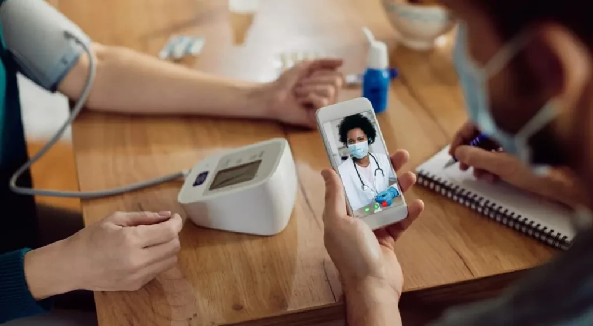
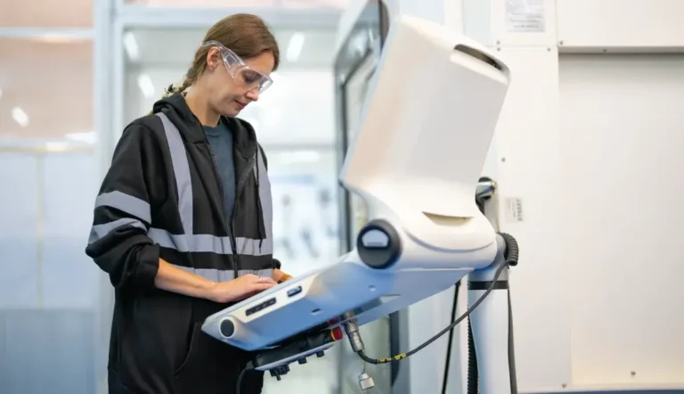

Patient safety
Clear alarms, stable readings, and predictable behavior in clinical environments.
Stackly is focused on medical devices that fit real clinical workflows. We care about how devices are installed, used, serviced, and audited—not just how they look on paper.
Clear alarms, stable readings, and predictable behavior in clinical environments.
Interfaces designed to reduce confusion and shorten staff training time.
Access for biomedical engineering teams to service, calibrate, and document.
Specification summaries and quick-reference guides that are easy to use.
Working directly with clinical and technical teams to shape device roadmaps.
Support plans that match how your organization grows and changes.
Our team brings together experience from hospitals, biomedical engineering, and product design—so devices are built with clinical reality in mind.

Clinical advisors Physicians and nurses who help shape how devices fit into wards and procedure rooms.
Product & support Teams who connect feedback from sites into updates, documentation, and training.Beyond individual devices, teams tell us they value the way information and support are organized around their work.
We begin with a simple picture of your current devices, departments, and constraints before suggesting any changes.
We document device behavior and service plans in ways that help clinicians, engineers, and procurement talk together.
As your services add new locations or programs, Stackly device families can be extended instead of replaced.